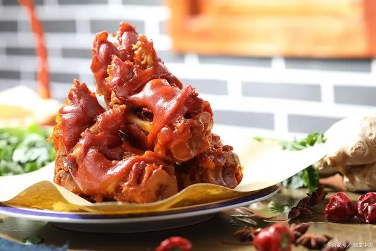
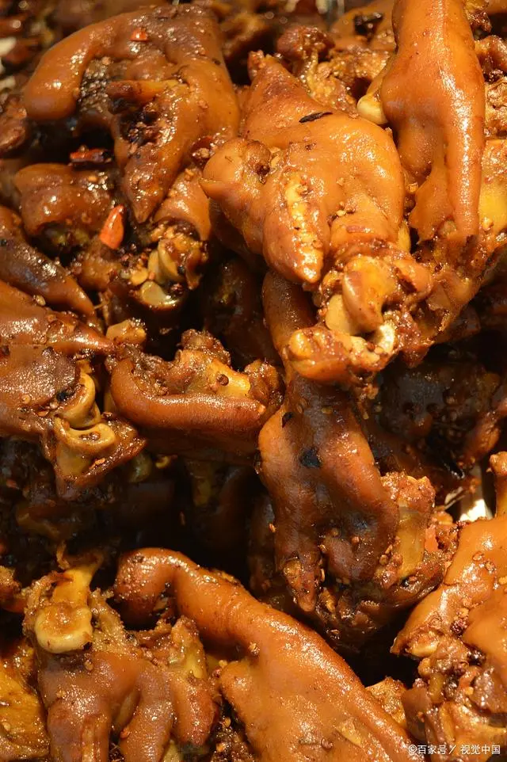
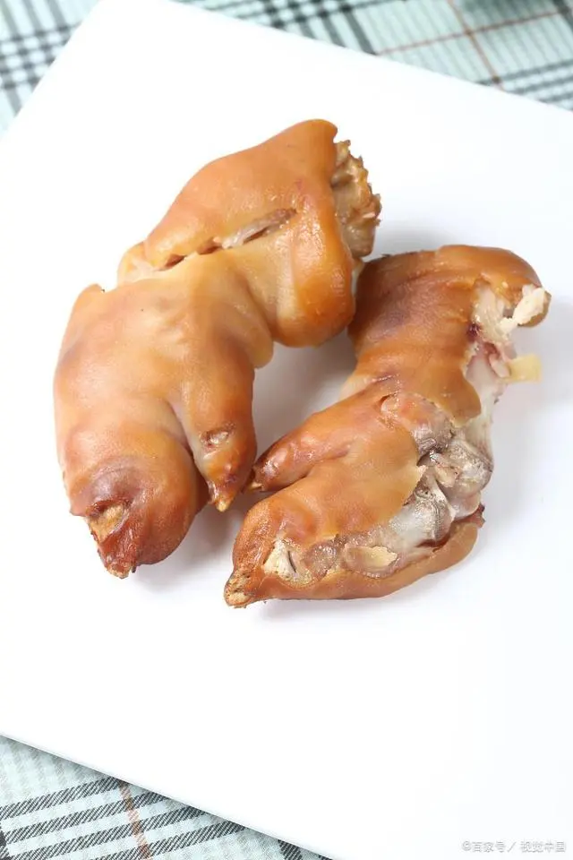

济南禁不住流口水的美食——孟家扒蹄
发布时间: 2022-04-07 4859 次浏览
-
说到济南本地的美食，很多人都会禁不住流口水。济南的美食有着独特的地域特点，也就是人们所说的济南味道。像是宽厚里的小吃街，在济南是非常的有名气的，每每经过的时候，总会被那独特的味道所吸引。今天我介绍的也是济南特别的美食，叫做“孟家扒蹄”。
孟家扒蹄是山东济南市的当地名吃，历史可以追溯到二十世前期。起源于济南市五龙潭公园西南侧的“文升园”，与汇泉楼齐名。文升园的招牌菜是就是孟家扒蹄也叫“罐儿蹄”。孟氏趴蹄有软烂香醉、色泽细腻红润，肉烂脱骨而皮整，味鲜醇厚而鲜香的特点。
如果你是本地人或长居此地，你一定知道济南孟家扒蹄的美味，如果你来济南旅游，只“游”不“吃”又怎么行呢！济南名吃可为数不胜数，如：草包包子、黄家烤肉、孟家扒蹄、天天炸鸡、油旋等不计其数。脚下是水泥的路面，眼中是路边一个个的小吃店，鼻中是各色小吃的香味，耳中是各路小贩的吆喝。傍着繁华的泉城路，芙蓉街，依然热闹，但这热闹是轻松的，是市井的，是锅碗瓢勺叮叮当当的热闹。

黄河文化旅游宣传平台
联系电话: 17753010787
版权所有：山东大学技术团队
技术支持：山东大学技术团队